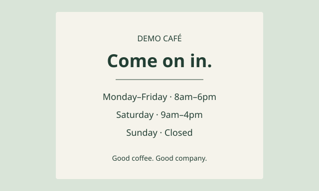

orch / the one master design system
Clear work. A calmer workspace.
Every component, every state, with motion Replay. Rules: DESIGN.md. Add new components to the master first (component, entry here, test), then use them. Nothing here is product data.
Master kit: widgets
Added to the master on 14 Nov. Each one is built by widgets.js and styled by widgets.css. Use these instead of writing a page-local version.
Status icon set and pill
Centred banner (.banner.center)
Link tile (.li, .li.sm, .h-<site>)
Icons added for the top bar and ticket: phone, pencil
Page frame: title and one muted line left, actions right, one right edge (full width; .form-width for a form page)
Tickets
Every ticket, from To do to Done.
Top bar: phone chip (on) and the quiet New ticket
Select (one SVG chevron) and chips
Mini table (CSV preview in a file card)
| name | qty |
|---|---|
| cups | 500 |
| lids | 500 |
Helpers list (Home side panel and Focus): every state, empty
Stat tiles
Metric card, chart and bar rows (from Insights)
Work over time
Loading mask (the page keeps its shape while data loads)
Progress with label
Table, sortable (click a header)
Reference list (ref-head, ref-list, ref-row): one 32 px row per link, 16 px tool mark, key + one-line title, state slot
References · 4
References
References
Tooltip (data-tip), sheet, toast with Undo
Setting row (label, value with one sentence, action)
Swipe deck (review one card at a time; arrows, Space, B, O, Z work; voice is off unless the page sets it; a card shows “About: <task>” when its question belongs to a task; O opens the overview grouped by ticket and task)
Answer record (taken option marked, spots, words) and What applies now
Loading skeletons per route: Home, Tickets (list and board), Ticket, Section (add-on frame)
Add-on page blocks (contract addon-view.schema.json): schedule table row with switch and buttons, week strip, half-width pair, compact list, settings rows with a choice, footnote
RunningNext run in 2 days.
| Repeats | Next run | Actions | On |
|---|---|---|---|
| Weekly reportWorkspace helper | Mon 16 Nov, 08:00 |
Coming up
- Mon16Weekly report
- Tue17
- Wed18
Recent messages
- Hello thereToday 10:00
Workspaces you can talk to
No workspaces allowed
Allow a workspace to send it messages and files.
Recent runs
- Weekly report
Connection
Sync mode
Incoming from your phone.Manage incoming work →
Proposal card · split header, check row, row, code block, disclosure
Check-up
Invoice skill: check the date
Show the change
Write dates as you like.
Write dates as YYYY-MM-DD.
Tabs
Dialog sizes S / M / L (footer rule)
Dialog S
Plain editable value: .ed.ed-plain (pencil), empty with .ed-link
Workspace look · badge sizes (16, 26, 32, 46; light) with --c set, and without a colour
Workspace look · picker: category chips (pressed, rest), icon tiles (rest, pressed), colour swatches (rest, pressed, Automatic), preview
Workspace look · sidebar switcher box and its open menu (.workspace.ws-switch, .sw-menu, .sw-item)
Foundations
Canvas
Card
Raised
Action
Primary text
Quiet text
Type · system fonts · 400 / 500 / 600
2 things need you
A clear section heading
Body text gives the useful detail, in plain words.
Status · a word and a distinct symbol
Controls
Icons · the one set (sidebar add-ons, chevrons, actions)
Actions · one primary action per context
Inputs · labels remain visible
Segmented control · native radios
Focus: the helper's screen, log and results
Session dock · closed: one line above the message box (click or Ctrl+` opens it)
Session dock · open, helper waits for an answer (one yellow line, typing off)
Session dock · loading, stopped updating, closed (one at a time)
Command block · folded step with its command, output, time and a copy button; log search above
Build the autumn draft12 s
python3 tools/newsletter.py build --draft autumnBuilt newsletter/autumn-draft.html (3 stories, 412 words)
Check the links2 s
python3 tools/newsletter.py linksQueued message · waiting above the message box, then read
Use the spring photo for story two.
Use the spring photo for story two.
Hand-off line · where a question also waits
Sent to your phone 12:31. Answer here or there, whichever is first.
Answered on your phone 12:34.
Result card · thumbnail, title, kind chip, time and one action
Tabs and breadcrumb
Date picker, with an optional time
Content patterns
Choose the gift box supplier
Needs youBoth offers fit the budget. Alpine Pack can deliver before Friday.
- ✓Plan
- ◉Work
- 3Check
- 4Done
Work at a glance
| Ticket | Status | Who | Updated |
|---|---|---|---|
| Plan the autumn newsletter | Working | HHelper | 2 min ago |
| Choose the gift box supplier | Needs you | BBen | 3 min ago |
| Summarise the customer survey | Ready for review | AAnna | 4 min ago |
| Prepare the opening hours sign | Done | AAnna | 5 min ago |
Plan the autumn newsletter

Finished steps
Recent activity
Show history
12:32 · Summary saved
12:28 · Answers read
12:26 · Helper started
Week bands
A repeat that fills several days is one band across them, not a card per day.
Results
Real content before filenames. A single file gets a large preview; collections use this same frame with a fixed action row.
Opening hours

Customer survey
Opening hours page
| # | Topic | Responses |
|---|---|---|
| 1 | Friendly team | 84 |
| 2 | Sunday opening | 61 |
Survey responses
What customers told us
Most customers value the friendly team.
- Keep the personal service.
- Try Sunday morning opening.
Show source
# What customers told us - Keep the personal service. - Try Sunday morning opening.
Summary notes
{ "name": "Demo café", "sunday": "Closed"}Show all fields
"saturday": "09:00–16:00"
Opening hours data
Hello team, The survey summary is ready. Please read it before Friday’s meeting. Thanks, Anna
Team message
Notification sound
Opening hours recording
Ready to download
Print package
States
The preview keeps the same space in every state.
Opening hours
Overlays
Dialog, sheet and menu · keyboard accessible
More actions ⌄
Confirmation · one toast, five seconds
Motion
Page entry
2 things need you
A supplier choice and a result to review.
Skeleton → content
Your summary is ready
Most customers value the friendly team.
Add or remove a row
Switch a tab
The helper has read all 112 answers.
Open a dialog
A short decision, with a safe action focused first.
Open a side panel
Keep the current page behind the result preview.
Show a confirmation
One confirmation at a time. Undo stays a plain click.
Update progress
Hover and press
A status change
Choose the gift box supplier